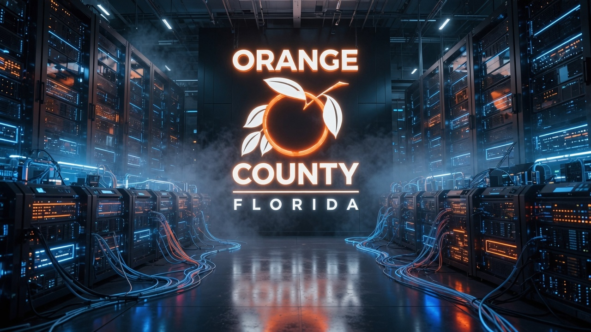

Inside ISS
Welcome to Inside ISS
We're introducing a new monthly newsletter to keep Orange County teams informed about ISS initiatives, technology improvements, and the work that supports daily County operations.

Information Systems & Services
A web edition highlighting how Orange County teams are putting AI to work, featuring technology updates, cybersecurity news, and staff guidance.
Inside ISS
We're introducing a new monthly newsletter to keep Orange County teams informed about ISS initiatives, technology improvements, and the work that supports daily County operations.

ISS News
Orange County is using artificial intelligence (AI) in new ways to help employees work more efficiently and improve services for residents. Across multiple departments, AI tools are helping staff with routine work in areas such as procurement, finance, information technology, document review, cybersecurity, and employee support.
These tools save time and reduce repetitive work. They also help improve response times and make County services easier to access.
AI tools are being introduced carefully to support employees while following County policies and maintaining appropriate security safeguards.
As more departments explore AI, Inside ISS will continue sharing examples of how these tools are helping employees and improving County services.
Orange County is using a Custom GPT tool to help 311 staff quickly find accurate information across County services and better assist residents with questions and resource navigation.
The tool reduces time spent searching by giving faster, more consistent responses during daily interactions and high call volumes. Staff can quickly pull up service details, program information, and County resources, cutting manual lookups.
Early feedback shows the tool is improving response speed and consistency while helping staff deliver accurate information to residents. It is part of the County's broader approach to using AI responsibly to improve service quality and support employees in their daily work.
AI at Work
Orange County's Procurement Division is using AI technology to help employees complete routine work more quickly. AI is helping with invoice processing, contract reviews, workload assignments, change orders, and Statements of Work (SOWs), while improving document quality and consistency.
AI technology is already helping Procurement save time and reduce manual work. Current estimates show they save about 7,954 work hours and nearly $200,000 each year while helping employees keep up with growing workloads.
Cybersecurity Corner
Orange County continues improving remote access tools so employees can work securely from different locations. Updated virtual private network (VPN) technology strengthens security, improves connection reliability, and gives staff a smoother experience when accessing County systems remotely.
Ongoing work focuses on usability, reliability, and cost efficiency while helping protect County networks and information during remote work.
All software requests must be reviewed and approved by ISS before a purchase is made. Employees should submit a ServiceNow request or work with their ISS project lead before purchasing new software to make sure security, compliance, and system requirements are met.
Following this process helps reduce security risks, avoid duplicate tools and unnecessary costs, and make sure departments get the right tools to meet their business needs.